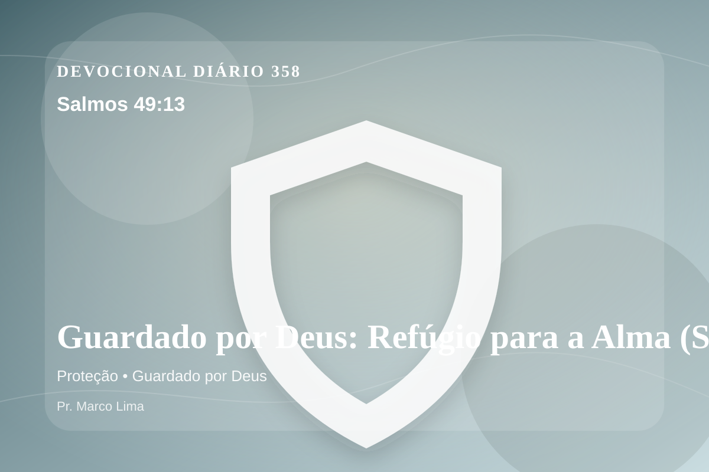

Guardado por Deus: Refúgio para a Alma (Salmos 49:13)
Este é o caminho dos tolos e dos seus seguidores, que se agradam de suas palavras. (Selá)
Pensamento
Aqui, o convite é perceber como Deus sustenta a caminhada quando a fé é provada no cotidiano. A leitura de hoje convida você a diminuir o ruído, abrir a Bíblia com humildade e deixar que Salmos 49:13 fale com profundidade.
Salmos 49:13 chama o coração a ouvir Deus com reverência e responder com fé prática. A Palavra não foi dada para enfeitar pensamentos religiosos, mas para conduzir pessoas reais ao Senhor.
O tema de proteção precisa ser recebido com simplicidade e seriedade. Quando essa verdade encontra resistência dentro de nós, é justamente ali que o Espírito deseja trabalhar. A proteção divina não significa ausência de lutas, mas presença fiel de Deus no meio delas. O Senhor guarda a alma, sustenta a fé e conduz Seus filhos mesmo em caminhos difíceis.
A Palavra convida você a abandonar desculpas. Onde houver pecado, confesse; onde houver incredulidade, peça fé; onde houver cansaço, volte-se para Cristo.
Arrependimento não é apenas sentir peso na consciência; é voltar-se para Deus, abandonar o caminho que entristece o Senhor e confiar que a graça de Cristo é suficiente para perdoar e transformar.
Este é o evangelho que sustenta toda aplicação: Jesus Cristo morreu pelos pecadores, ressuscitou em vitória e chama cada pessoa a responder com fé, arrependimento e uma vida rendida ao Seu senhorio.
Deus não chama você para uma religiosidade sem vida, mas para reconciliação com Ele por meio de Cristo. Essa reconciliação começa com fé humilde e arrependimento sincero.
Se o texto trouxe consolo, adore. Se trouxe confronto, arrependa-se. Se trouxe direção, obedeça. Em tudo, volte os olhos para Cristo.
Para Praticar Hoje
- Leia Salmos 49:13 lentamente e destaque uma palavra ou expressão central do texto.
- Confesse a Deus um pecado, resistência ou frieza espiritual que esta Palavra revelou.
- Declare sua fé em Jesus Cristo e pratique hoje uma atitude concreta de arrependimento e obediência.
Oração
Senhor, onde a insegurança me ronda, dá-me certeza. Salmos 49:13 me ensina que o Senhor é luz e salvação — de quem temerei? Protege os que amo e sustenta minha fé. Ajuda-me a viver essa Palavra com sinceridade.
{kind=link}